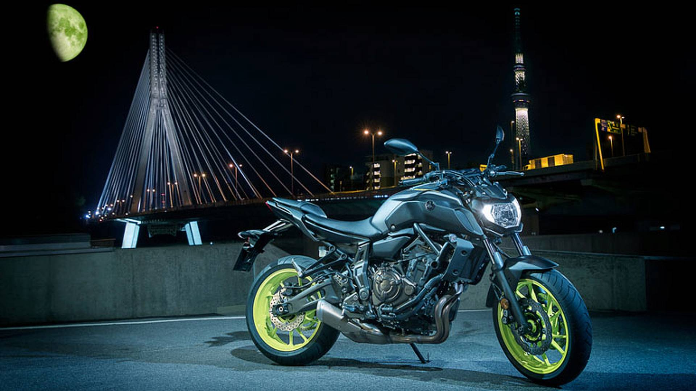

Predstavljamo vam Yamahu MT07 2024.Yamaha MT125 je najbolji motor za početnike vožnje motocikala, razlog toga je pouzdanost i lakoća vožnje.Yamaha MT10SP je najagresivniji naked motor ikada proizveden.Najprodavaniji motor 2006 godine je Yamaha FZ6N.Yamaha TMAX 560 je maxi skuter koji je pobijedio sve svoje konkurente.Yamaha MT09 TRACER je naked motor predviđen da vožnju jako dugih relacija.Yamaha R6 je jako konkurentan motor na stazi u klasi 600.Yamaha R1 kultni motor jako popularan medu starijim generacijama vozača.Yamaha R3 se pojavila na tržištu kada su A2 kategorije motora postale jako tražene.Yamaha R7 je došla nedavno na tržište te je iz dana u dan sve popularnija.